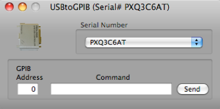

USB->GPIB Controller



Select the USB device serial number. You may have to use the About This Mac main menu item to discover which USB serial number goes with which device.
Send low-level raw commands to the selected GPIB device. Returned strings are displayed in the status log.
Chain multiple USB devices to this connector
Connect the GPIB device to the top connector
A example of using this device in an ORCA configuration. Connect devices up as shown on the left. In general, just follow the color coding of the connectors. ORCA will not allow illegal connections so it’s pretty hard to make a mistake.